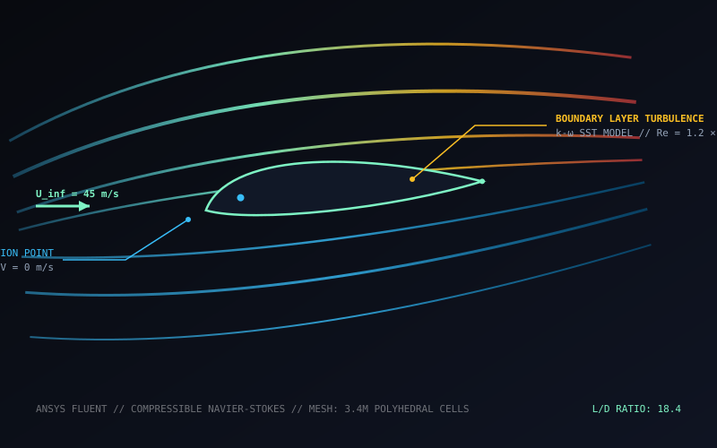
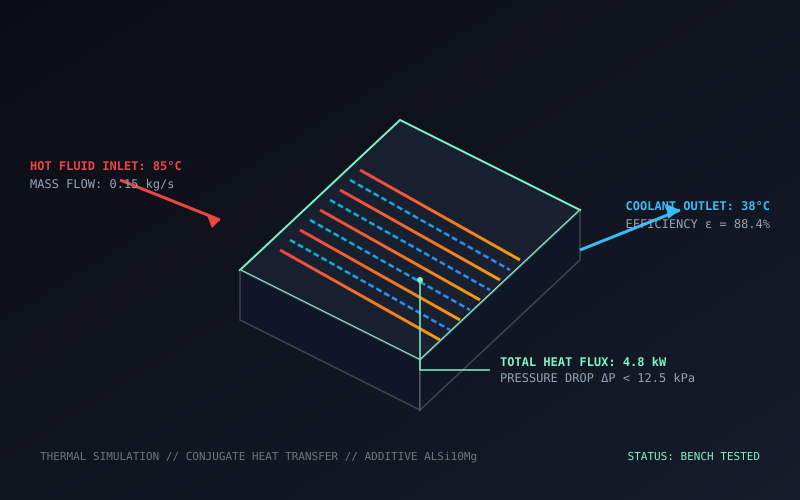
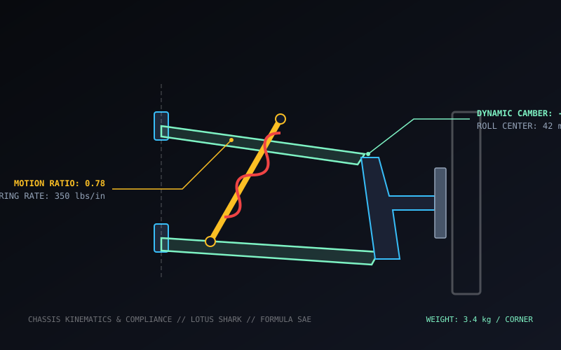

Technical Projects & Prototypes
Exploration of precision CAD assemblies, non-linear FEA validations, aerodynamic CFD simulations, and automated mechatronic systems.
 CAD / Mechanical
CAD / Mechanical
Epicyclic Planetary Gearbox
High-torque density planetary gear reducer with optimized tooth mesh geometry, carrier plate deflection analysis, and ISO H7/p6 press fits.
 FEA / Structural
FEA / Structural
Structural Topology Optimization
Nonlinear finite element stress and fatigue life analysis on an aerospace grade aluminum suspension bracket undergoing multi-axial shock loads.
 Robotics & Mechatronics
Robotics & Mechatronics
6-DOF Robotic Manipulator
Articulated robotic arm integrating harmonic drive gearheads, brushless servo actuators, custom parallel gripper, and inverse kinematics in ROS2.

Thermal & Fluids / CFDTransonic Airfoil Aerodynamics
High-resolution CFD simulation of compressible airflow, shock wave formation, and turbulent boundary layer separation on an aerodynamic lifting surface.

Thermal & FluidsAdditive Microchannel Exchanger
Conjugate heat transfer modeling and DfAM (Design for Additive Manufacturing) of a high-efficiency liquid cooling cold plate for power electronics.

Chassis & DynamicsFormula Suspension Kinematics
Full kinematic design, roll center optimization, and upright component machining for a lightweight open-wheel racing car chassis.